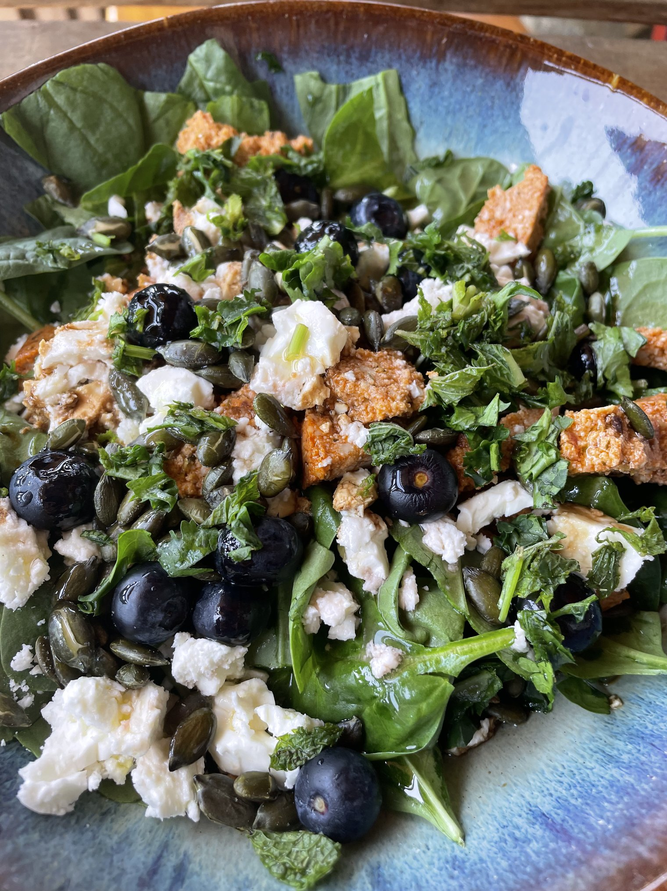

Ensalada de espinacas, feta y arándanos
Ingredients
2×
- 150 g de polenta fría (o tofu)
- aceite de oliva
- 100 g de espinaca baby
- 100 g de feta
- 1 puñado de arándanos
- 2 cdas de pipas de calabaza
- menta
- perejil
- zumo de limón
- sal

Preparación
Paso 1
Cortar 150 g de polenta fría (o tofu) en dados y dorarlos en la sartén con aceite de oliva.
Paso 2
Mezclar 100 g de espinaca baby con 100 g de feta desmenuzado, 1 puñado de arándanos, 2 cdas de pipas de calabaza, menta y perejil picados.
Paso 3
Aliñar con aceite, zumo de limón y sal, y añadir los dados crujientes por encima.